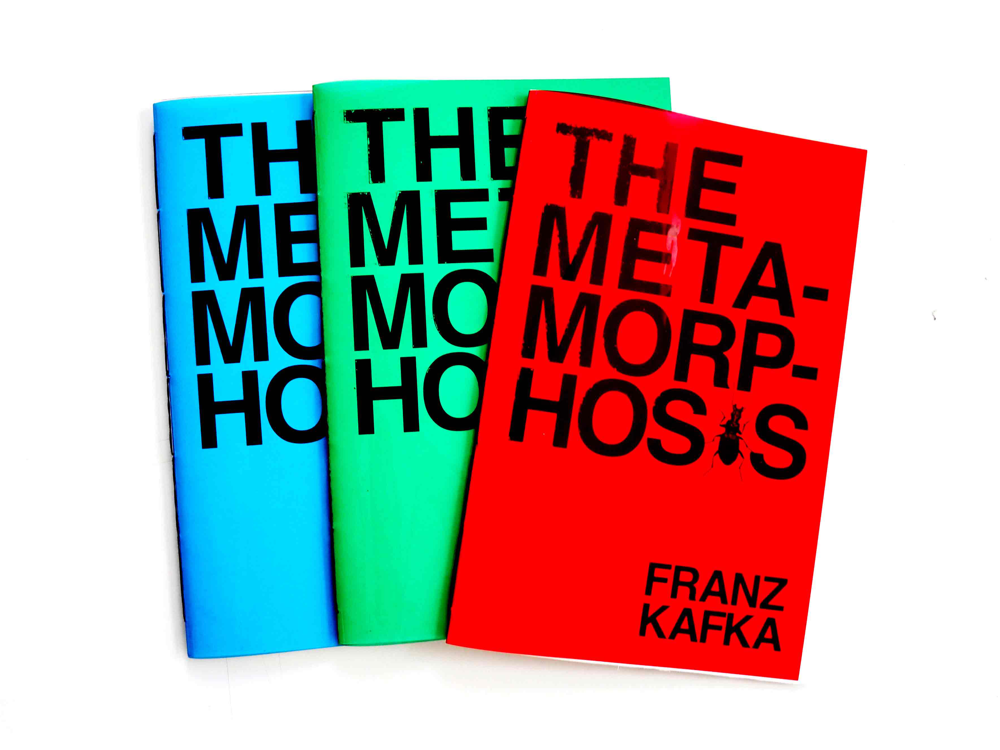
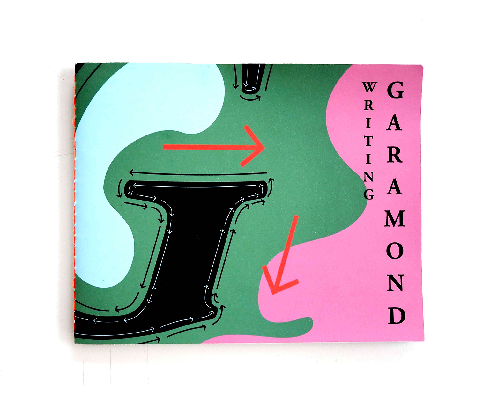

Dis Zine is a zine focused on popular culture and current social issues.
Issue#3 is derived from the word "EXIT". There are 8 stories ranging from politics, art, popular culture and tecnology, plus a photo gallery.
"EXIT" is not only a way out but also way in. Here I explore the intriguing duality of exits in life: finding a way out of this surreal and almost absurd world,
finding a way in to a clearer reality.
To emphasize the sense of duality, I use only black and white for all content but only full color for the photo gallery in the very middle of the book.
This exception is designed to mark the transition to the other side of the duality. In the gallery, screenshots from video games and those from security cameras are put parallel in each spread.
Dis Zine#2
Dis Zine Issue#2 includes 10 interviews with contemporary young creatives.
As a young creative myself, I'm always intrigued to find out what's their experience to work and create under this post 2.0 era.
What's their attitude toward popular culture and what did them lose and what that them found?
Dis Zine#1
Dis Zine Issue#1 is derived from a pack of pink gum I bought from CVS.
This most common object on counter with such a stand-out, bright neon pink color inspired me with the idea and name of this zine.
"Dis" in french is a informal language for drawing someone's attention. "Dis" is also a common slang as the abbreviation for "this".
In this first issue, I intend to establish such an attitude or tone as "dis": informal, neutral, softly sarcastic but also concerning.
Metamorphosis

Books of three through the lenses of classics, modernism and post-modernism for Franz Kafka's well-known fiction Metamorphosis
2016
Writing Garamond

Type specimen of a classic serif typeface: Garamond.
Focus on two most prominent attributes of Garamond which are naturalism of the hand-writing feature and the practicalism of the technical feature.
Worst Movies Ever Made
Book about a Wikipedia long list:
Worst Movies Ever Made.
An untypical format is chosen to draw seperate attention to each side of the spread. On the right side, mean comments on movies are set in loud types. When skimming through, readers can stop at any spread depending on the comments they're interested in.


 coding
coding